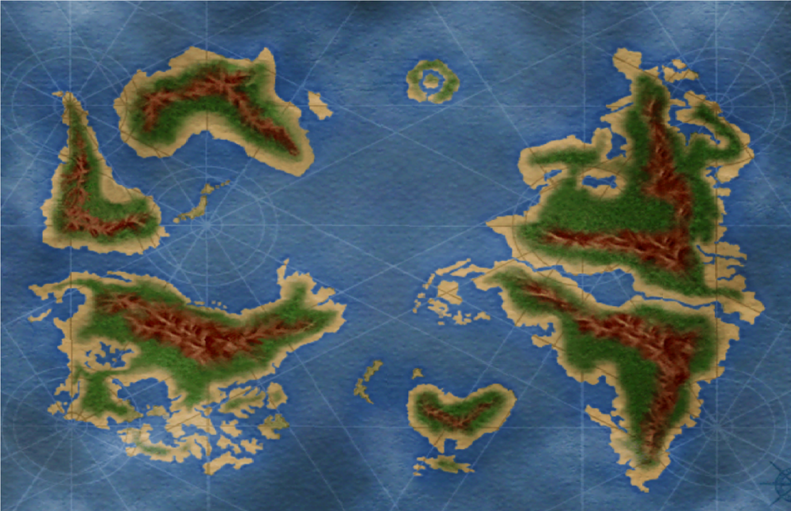
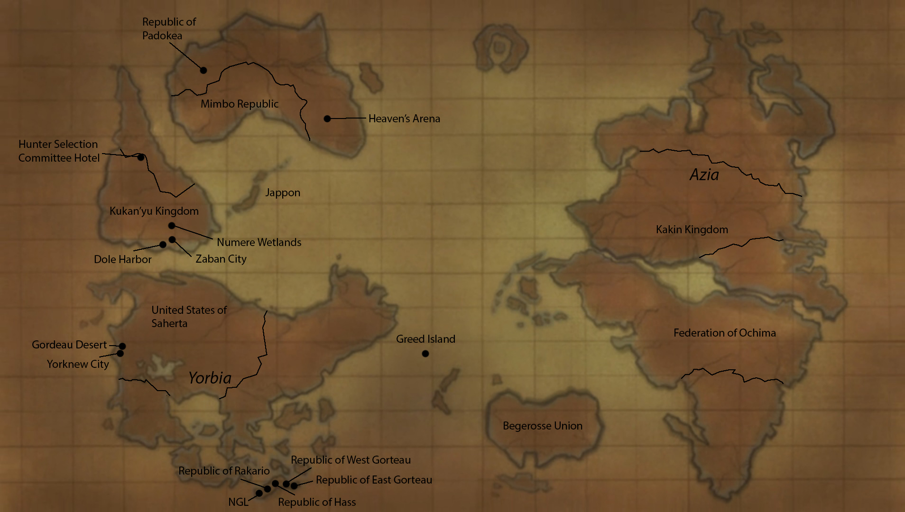

World

The World of Hunter × Hunter (ハンター世界と文化,[1] Hantā Sekai to Bunka—lit. "Hunter World and Culture") is a fictional universe created by Yoshihiro Togashi.
The Hunter × Hunter world is composed of the ocean and the 6 continents which look similar to those of the real world but have different locations. There are 250 countries in the world and only two continents are known by name so far: the Yorbian and Azian continents. In reality, the "ocean" where these continents are is a great lake in the Dark Continent called Lake Mobius. Beyond the geographical/physical aspects, it is also composed of many other fictional cultural aspects, including: languages, currencies, ethnicities, etc.
More Detailed Map With Places Labeled
